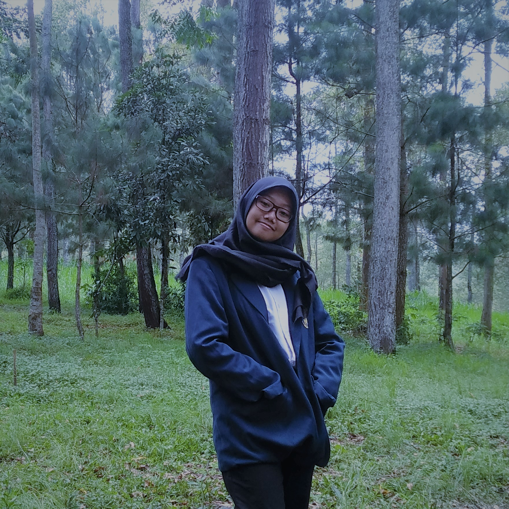
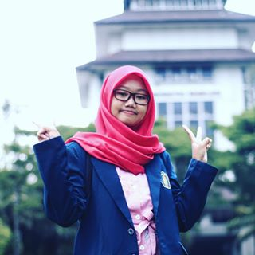
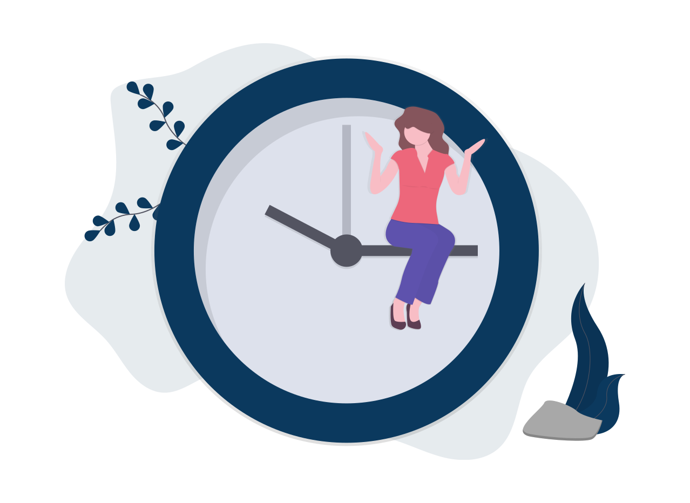

Beranda Tentang Saya Portofolio Hubungi



Beranda Tentang Saya Portofolio Hubungi

Aku adalah mahasiswa Teknik Informatika FILKOM UB angkatan 2019. Kota asalku adalah Blitar, Jawa Timur. Yup.. tetangganya Malang. Salam Kenal😊😊
Riwayat PendidikanPertama kali aku belajar Membaca dan Berhitung adalah di TK Dharma Wanita yang kebetulan berada di dekat rumahku. Kemudian aku melanjutkan pendidikan dasarku ke SD Popoh 01, tempat aku menghabiskan 6 tahun masa kanak-kanak sebelum menjadi remaja. Pada saat SMP aku bersekolah di SMPN 1 WLingi yang merupakan sekolah favorit di daerahku. Setelah itu aku melanjutkan ke SMAN 1 Talun, disana aku masuk kelas Akselerasi sehingga aku lulus hanya dengan 2 tahun duduk dibangku SMA. Karena itu aku sekarang menjadi mahasiswa di Universitas Brawijaya. |
Pengalaman OrganisasiSebagai pelajar aku juga aktif berorganisasi misalnya waktu SMP aku pernah menjadi anggota pengurus OSIS Sekbid 9 yang membidangi IT dan Documentasi. Kemudian saat SMA aku pernah menjadi pengurus harian Koperasi Sekolah. Karena aku iku kelas akselerasi aku hanya mengikuti ekstakulikuler dan keorganisasian sampai pada semester 2 saja. Namun, aku tetap bergabung kedalam Karang Taruna di desaku, dan sekarang aku adalah staff Advokesma BEM FILKOM UB. |
 |
HobiHobiku adalah nonton drama korea dikala senggang. Kenapa aku suka nonton drakor karena menurutku ceritanya bagus dan episodenya pendek sehingga kualitas cerita tetap terjaga. Melalui drakor aku juga bisa belajar bahasa korea dan huruf hangul, sangat mengasikkan hehe... Selain nonton drakor hobiku adalah membaca novel. Genre kesukaanku adalah Romance tentu saja dan Mystery terkadang. Karena aku suka mencoba hal-hal baru tidak menutup kemungkinan hobiku akan bertambah. |